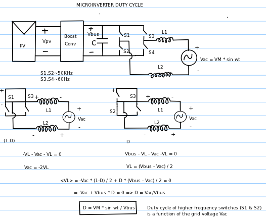
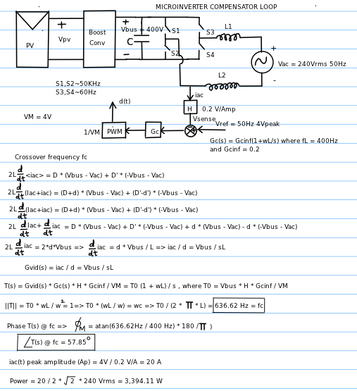

Microinverter
Recently finished a course on Power Electronics offered by Prof.Erikson from the University of Colorado (Boulder) on Coursera. A fantastic hands on introductory course on the methods used in controller design. More than one of the homework assignments involved the design and control of a solar microinverter.
A microinverter is a current inverter (as opposed to a voltage inverter which is commonly used as a battery inverter or un-interrupted power supply (UPS)). Simplified schematic of a microinverter is shown below:

In conventional battery/voltage inverters, the duty cycle is generally a constant function to produce constant AC voltage output. But in a current microinverter or a string inverter, the duty cycle is a function of the AC grid voltage and frequency because the microinverter's output must be in phase with the AC grid voltage or else it will destructive interfere.
Like most controllers, the microinverter also has a compensator feedback loop which adjusts the duty cycle to minimize the difference between a reference AC voltage and the output of the microinverter. An example of a such a compensator loop is shown below along with some example values.

Texas Instruments has a development kit for engineers interested in developing solar inverters. This particular kit is for a string inverter and is probably of a higher voltage than a typical microinverter.